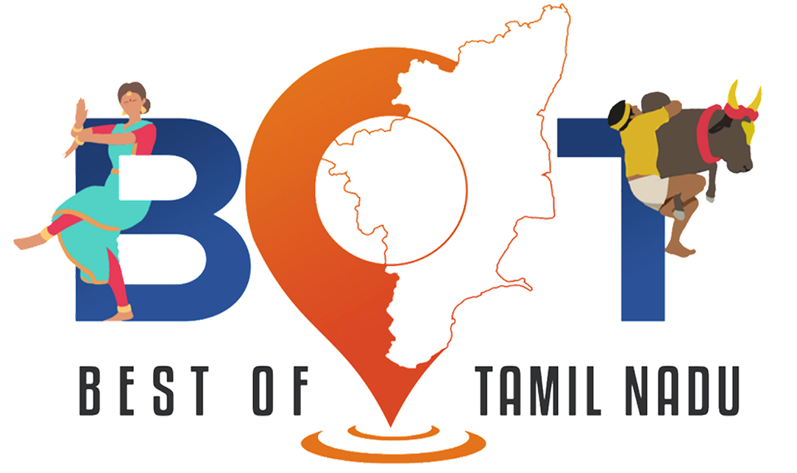

Best Of Tamil Nadu
Our Logo
Signifies

Our logo serves as a symbolic gateway to the beauty, richness, and diversity of Tamil Nadu.
The fusion of Bharatanatyam dance and Jallikattu underscores our celebration of Tamil Nadu's vibrant cultural traditions and fearless spirit.
The integration of the TN map into a GPS location pointer symbolizes our warm invitation to tourists to explore the best of our state.

The bold bull symbol embedded in the letter ‘T’ represents Tamil Nadu’s courage, rural essence, and identity.
By blending these elements seamlessly, our logo encapsulates the essence of Tamil Nadu's identity and beckons visitors to embark on a journey of discovery and immersion into our unique heritage.